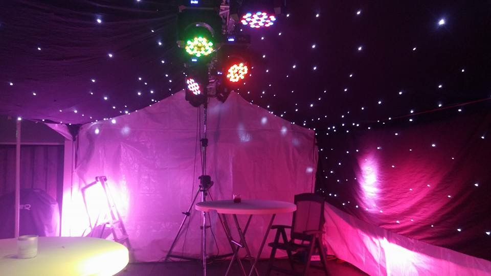
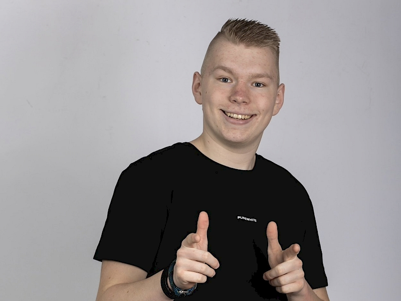
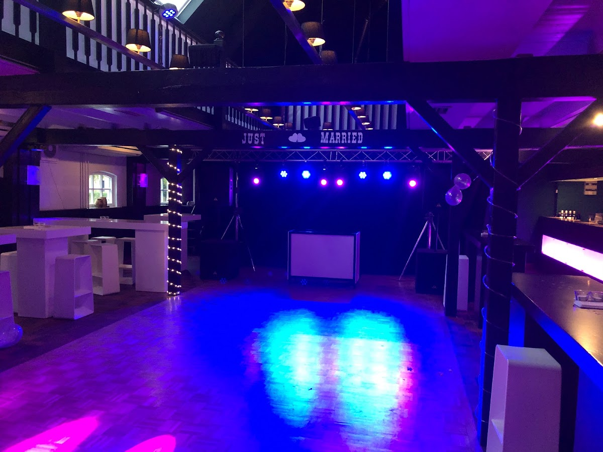
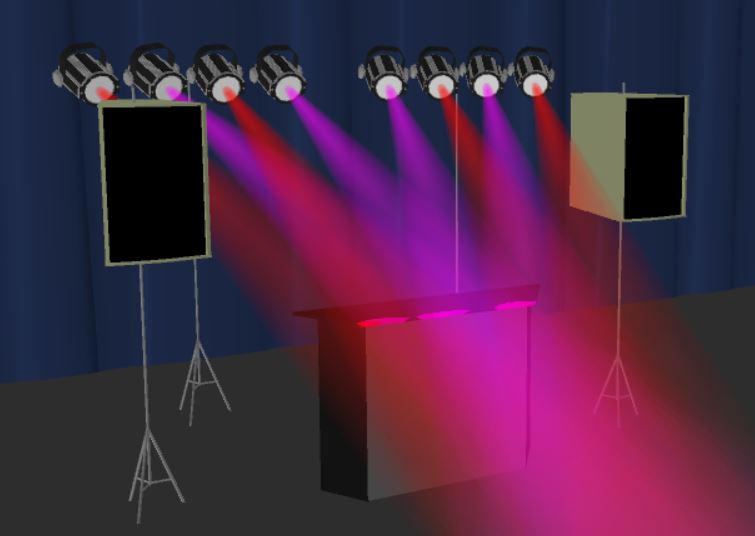

Onze DJ's

DJ Eleven
60's, 70's, 80's, 90's, 00's, Nederlandstalig, Feestmuziek, Dance, Trance, Hardcore, Latin
DJ Eleven (Jos) is een allround DJ die je kunt inzetten voor elk soort feest. Door zijn jarenlange ervaring kan hij precies lezen wat mensen willen en de opdrachtgever volledig ontzorgen. Met zijn passie, enthousiasme en liefde voor muziek maakt DJ Eleven van elk feest een fantastisch en onvergetelijk feest.

DJ Twan
70's, 80's, 90's, 00's, Dance, Nederlandstalig, Feestmuziek, House
DJ Twan (Twan van Beuningen) is een allround DJ voor elk soort feest. Door zijn jarenlange ervaring kan hij precies lezen wat mensen willen. Met zijn passie, enthousiasme en liefde voor muziek en entertainment maakt DJ Twan van elk feest een fantastisch en onvergetelijk feest.

DJ On The Floor
60's t/m 00's, Dance, Nederlandstalig, Feestmuziek, Hardcore, House, Moombahton, Reggaeton
Floor is een DJ uit Vinkel met een passie voor muziek en het creëren van een gezellige sfeer. Met een brede muzieksmaak draait ze alles wat zorgt voor happy vibes. Van bedrijfsfeest tot bruiloft, haar doel is: mensen laten dansen, lachen en meezingen.

DJ Alex
70's, 80's, 90's, 00's, Jazz, Lounge, House, Ibiza
Dankzij Ferry Maat's Soulshow werd de passie voor muziek bij Alex aangewakkerd. Na jaren oefenen ging Alex als allround DJ draaien in de regio Nijmegen, in feestcafés, danscafés, bars en clubs. Bij Alex kun je terecht voor toegankelijke, vrolijke en dansbare muziek.

DJ Jay Gonzales
70's t/m 00's, Nederlandstalig, Feestmuziek, House, Moombahton, Reggaeton
DJ Jay Gonzales is een allround DJ voor elk soort feest. Met zijn passie, enthousiasme en liefde voor muziek en entertainment maakt DJ Gonzales van elk feest een fantastisch en onvergetelijk feest.

DJ Tijn
80's, 90's, 00's, Nederlandstalig, Feestmuziek, House, Pop, Dance
DJ Tijn is een allround DJ met een groot feesthart. Van jongs af aan bezig met muziek draaien, heeft hij voornamelijk ervaring op privéfeesten, jubilea, bedrijfsfeesten, schoolfeesten en tentfeesten. Door de juiste mix van muziekstijlen zorgt hij ervoor dat mensen van alle leeftijden mee worden genomen.

DJ Mariska
70's t/m 00's, Rock, Nederlandstalig, Feestmuziek, Hardcore, Dance, Moombahton, Lounge
De Friese Mariska is allround DJ, altijd enthousiast en passievol met het vak bezig. Naast kennis over vele muziekstijlen heeft Mariska veel mensenkennis en voelt goed aan wat haar publiek wil. Met DJ Mariska heeft u ongetwijfeld een geweldig evenement.

DJ Bas
90's, Nederlandstalig, Feestmuziek, Hardcore, Dance
DJ Bas is een van onze jongste deejays, maar met een bak ervaring. Met zijn passie, enthousiasme en liefde voor muziek maakt DJ Bas van elk feest een fantastische en onvergetelijke avond. Zijn voorkeur: iedereen op de dansvloer!